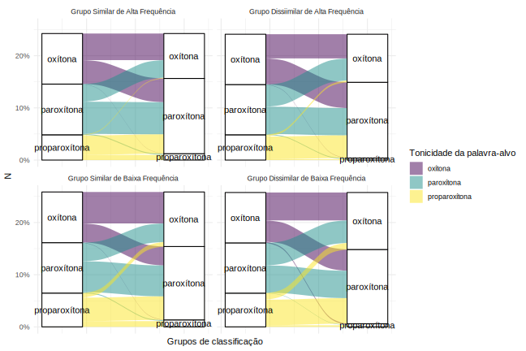

B Gráficos

FALSE <ggproto object: Class FacetWrap, Facet, gg>
FALSE compute_layout: function
FALSE draw_back: function
FALSE draw_front: function
FALSE draw_labels: function
FALSE draw_panels: function
FALSE finish_data: function
FALSE init_scales: function
FALSE map_data: function
FALSE params: list
FALSE setup_data: function
FALSE setup_params: function
FALSE shrink: TRUE
FALSE train_scales: function
FALSE vars: function
FALSE super: <ggproto object: Class FacetWrap, Facet, gg>
| Grupo | Tonicidade de produção | Oxítona | Paroxítona | Proparoxítona |
|---|---|---|---|---|
| 1 (Similar de alta freq.) | oxítona | 638 | 422 | 17 |
| 1 (Similar de alta freq.) | paroxítona | 570 | 771 | 464 |
| 1 (Similar de alta freq.) | proparoxítona | 5 | 23 | 125 |
| 2 (Dissimilar de alta freq.) | oxítona | 580 | 531 | 41 |
| 2 (Dissimilar de alta freq.) | paroxítona | 619 | 655 | 544 |
| 2 (Dissimilar de alta freq.) | proparoxítona | 8 | 19 | 21 |
| 3 (Similar de baixa freq.) | oxítona | 754 | 446 | 108 |
| 3 (Similar de baixa freq.) | paroxítona | 454 | 742 | 564 |
| 3 (Similar de baixa freq.) | proparoxítona | 8 | 21 | 138 |
| 4 (Dissimilar de baixa freq.) | oxítona | 670 | 540 | 157 |
| 4 (Dissimilar de baixa freq.) | paroxítona | 511 | 656 | 613 |
| 4 (Dissimilar de baixa freq.) | proparoxítona | 28 | 9 | 39 |